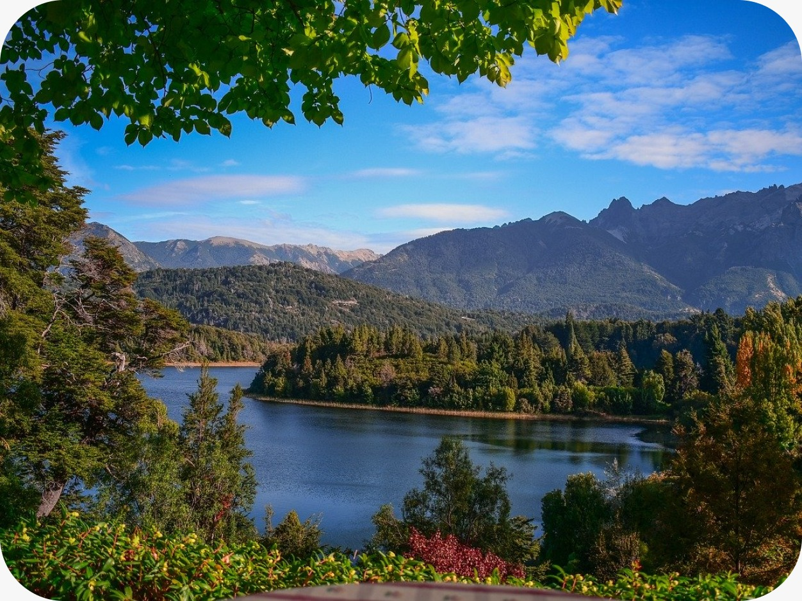

<
<Buscamos identificar y abordar las problemáticas más apremiantes que afectan a los tres bosques que respaldamos. Nuestra misión es combatirlas de la mejor manera posible mediante las donaciones de nuestros usuarios. Nos comprometemos activamente a comprender a fondo los desafíos específicos de la Selva Misionera, el Bosque Andino-Patagónico y el Bosque Chaqueño para luego movilizar recursos de manera estratégica.
Selva Misionera
La Selva Misionera se enfrenta a una amenaza constante por la deforestación, impulsada principalmente por la expansión de la agricultura. Esta problemática ha llevado a la pérdida de hábitats vitales y la disminución alarmante de la biodiversidad en la región. En respuesta, estamos llevando a cabo programas estratégicos de reforestación que no solo buscan restaurar áreas afectadas, sino también promover prácticas agrícolas sostenibles. Además, trabajamos en colaboración con autoridades y comunidades locales para establecer reservas naturales que actúen como salvaguardas cruciales contra la deforestación.
Bosque Andino Patagonico
El Bosque Andino-Patagónico enfrenta un aumento alarmante de incendios forestales, agravado por condiciones climáticas extremas. Estos eventos amenazan la diversidad biológica única y ponen en peligro la estabilidad del ecosistema. Para abordar esta problemática, hemos establecido brigadas especializadas en prevención y respuesta rápida. Además, trabajamos en estrecha colaboración con comunidades locales para promover prácticas de manejo del fuego más seguras y sostenibles, incorporando métodos modernos de prevención y control.
Bosque Chaqueño
En el Bosque Chaqueño, nos enfrentamos a la amenaza seria de desertificación y pérdida de suelo fértil a causa de prácticas agrícolas no sostenibles. Estas prácticas han resultado en la degradación del ecosistema, afectando la salud del bosque y reduciendo su capacidad para mantener la vida. Nuestra respuesta a esta problemática implica la implementación de técnicas de manejo del suelo sostenibles, buscando regenerar áreas afectadas y prevenir una mayor degradación. Además, promovemos la agroforestería entre las comunidades locales, una práctica que integra árboles y arbustos en sistemas agrícolas, mejorando la resiliencia del suelo y contribuyendo a la restauración del bosque